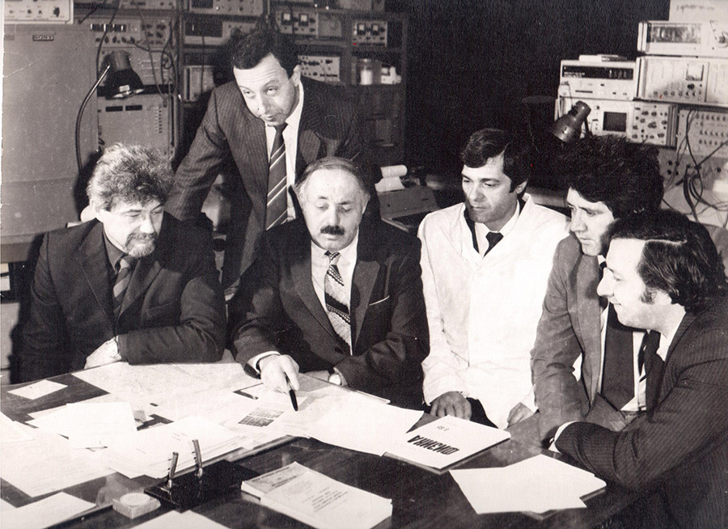
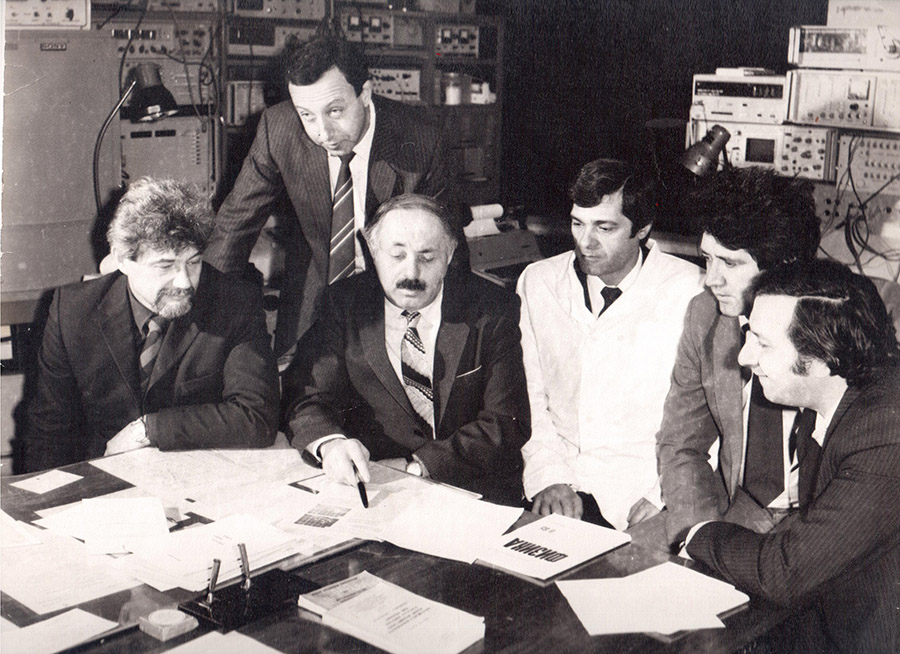

Матиев Ахмет Хасанович
доктор ф/м наук, профессор, аккадемик РАЕН

Матиев А.Х. - доктор физико-математических наук, профессор кафедр «Физика» Ингушского государственного университета и Грозненского государственного нефтяного технического университета им. М.Д. Миллионщикова, академик РАЕН.
Область научных интересов (исследований) – физика полупроводников, микроэлектроника, оптонаноэлектроника, нанотехнологии и микросистемы.
Руководитель научных работ по получению и исследованию новых полупроводниковых материалов сложного состава с целью изучения технических возможностей практического применения, получаемых в нашей лаборатории полупроводниковых кристаллов.
Выпустил 5 кандидатов физико-математических наук.>
Автор более 400 научно-методических работ.
За последние 5 лет выпущены 4 учебных пособия: по курсу общей физики «Электричество», «Обработка результатов физического эксперимента», «Магнетизм. Колебания и волны» и «Практикум по общей физике» с грифом Министерства образования и науки РФ «Рекомендованы в качестве учебных пособий для студентов ВУЗов», а также другие опубликованные учебные пособия для студентов ВУЗов имеют гриф ISBN.
Подготовлена к печати научная монография «Полупроводники» AIIIBIV и TlBIIICIV2. Часть I. В настоящее время идет интенсивная работа по завершению монографии «Полупроводники AIIIBIV и AIIIBIIICVI2». Часть II, в которой представлен обзор их физических свойств изучаемых полупроводниковых материалов и перспективы их практического применения. Руководитель магистратуры по специальности 03.04.02 “Физика”, профиль, подготовки “Физика полупроводников. Микроэлектроника”.
Под моим руководством проводятся совместные научно- исследовательские работы с Отделением Оптики ФИАН и кафедрой физики полупроводников и полупроводниковой электроники МГИСиС, а также с лабораторией «Кристаллофизика» Института Физики НАН Азербайджана, с отделением физики диэлектриков и полупроводников Санкт-Петербургского ФТИ им. А.Ф. Иоффе РАН согласно договоров о научном и творческом сотрудничестве.
Матиев Ахмет Хасанович родился 25 января 1948 г. в г. Алма-Ата. В 1966 году окончил среднюю школу №1 станицы Орджоникидзевской Сунженского района ЧИ АССР с золотой медалью. Был неоднократным победителем районных и республиканских олимпиад по физике, математике, химии. В 1966 году окончил заочную 4-х годичную математическую школу при МГУ, стал кандидатом в мастера спорта по футболу и мастером спорта по радиоспорту. В том же году поступил на мех-мат МГУ. Однако по семейным обстоятельствам не поехал на учебу в Москву. В 1971 году окончил Грозненский нефтяной институт по специальности «Автоматизация и комплексная механизация химико-технологических процессов», после окончания которого работал старшим инженером в Грозненском филиале НИПИ Нефтехимавтомат, где возглавлял группу, занимающуюся математическим моделированием процессов кристаллизации катализаторов-цеолитов. Тяга к физике и электронике явилась причиной перехода в 1974 году на кафедру физики Грозненского нефтяного института. В начале Я работал инженером НИСа, старшим лаборантом кафедры физики, младшим научным сотрудником НИСа, а с 1977 года ассистентом кафедры физики. Под моим руководством кафедра несколько лет вела хоздоговорные научно-исследовательские работы с предприятиями консервной промышленности ЧИ АССР по разработке и внедрению автоматических систем управления процессами стерилизации. Экономический эффект от внедрения указанных систем на Грозненском консервном заводе только в 1978 году составил более 2-х миллионов рублей.
Однако доценты кафедры Мальсагов А.У. и Баркинхоев Х.Г. ориентируют меня на исследования полупроводников. Я прошел научные стажировки, курсы повышения квалификации и длительные командировки в ведущих научных центрах СССР, таких как ФИ им. П.Н. Лебедева АН СССР, ЛФТИ им. А. Иоффе АН СССР, Московский, Ленинградский, Ростовский и другие университеты, а также Институты АН Молдавии, Украины, Белоруссии и Азербайджана, с которыми благодаря мне кафедра физики имела договора о научном и творческом сотрудничестве и проводила совместные научные исследования.
В 1990 году под моим руководством была создана, оснащенная современным компьютерным автоматизированным оборудованием Северо-Кавказская зональная научно-исследовательская лаборатория по получению и комплексному исследованию новых полупроводниковых материалов сложного состава, которая вела научно-исследовательские хоздоговорные работы с предприятиями Министерства обороны, Министерства приборов и средств связи, Министерства электронной промышленности и другими с целью изучения технических возможностей практического применения, получаемых в лаборатории полупроводниковых кристаллов. Результаты такого сотрудничества опубликованы в журналах АН СССР, РАН и др. Принимал и продолжаю принимать участие в работе ряда Международных, Всесоюзных и Российских научных, научно-технических конференций и симпозиумов, являюсь автором 2-х изобретений с грифом ДСП. На базе этих работ отправлены в ВИНИТИ СССР, РФ 16 научно-исследовательских отчетов. За период работы в ГНИ опубликовал 22 методические разработки по курсу физики.
В 1990 году в г. Москве защитил диссертацию на соискание ученой степени кандидата физико-математических наук. В 1992 году стал доцентом, а впоследствии и. о. заведующего кафедрой физики ГНИ. В этот период под моим руководством на кафедре была открыта аспирантура по специальности «Физика полупроводников и диэлектриков». Научно-исследовательская лаборатория под моим руководством в этот период и насчитывающая около 20 человек (А.У. Мальсагов, Х.Г. Баркинхоев, П.П. Космачев, Ю.А. Лопатина, И.М. Берфирер, В.В. Мешков, Р.Б. Дишеков, Л.М. Чапанова, Б.М. Хамхоев, Т.И. Шапиева, М.Ю. Саутиев, И.А. Захаров, А.С. Лисиенко, аспиранты А.П. Котченко, Р.З. Исмаилов и др.) проводила многочисленные экспериментальные исследования по поиску и получению новых полупроводниковых материалов сложного состава. Результатом этих исследований становятся рекомендации для практического применения, получаемых кристаллов, а также выход на завершающую стадию кандидатских и докторских диссертаций.
Однако конфликт в Чеченской республике привел к полному разрушению нефтяного института и, в том числе, и научной лаборатории. Несмотря на это был сохранен экспериментальный материал, который позволил многим сотрудникам лаборатории, в том числе и моим аспирантам завершить работы над своими кандидатскими диссертациями.
В 1973 и 1975 г. окончил два факультета университета марксизма-ленинизма при ГК КПСС: философско-пропагандистский и партийного строительства соответственно, в 1997 г. с отличием физический факультет ЧГУ по специальности «Физика».
За плодотворную научно-исследовательскую, методическую и педагогическую деятельности, а также за спортивные достижения и за активную работу в профкоме института имею ряд благодарностей, поощрений и почетных грамот от руководства нефтяного института.
В 1995 году по Постановлению правительства Республики Ингушетия меня назначают директором Карабулакского завода химических реагентов. В сентябре 1995 году Я возвращаюсь на работу в ГГНИ, однако в связи с военными действиями в 2000 году вновь покидаю республику.
С 1998 года началась моя трудовая деятельность А.Х. Матиева в Ингушском государственном университете в начале в должности доцента кафедры физики по совместительству, а с 2001 года зав. кафедрой общей физики и проректора по учебной работе, проректора по информатизации. Под моим руководством с 2000 года кафедра общей физики проводит совместные научно-исследовательские работы с Отделением Оптики ФИАН и кафедрой физики полупроводников и полупроводниковой электроники МГИСиС и другими научными организациями согласно договора о научном и творческом сотрудничестве.
В 2005 года в Ульяновском госуниверситете защитил диссертацию на соискание ученой степени доктора физико-математических наук по специальности «Физика полупроводников» стал первым доктором физ-мат наук в истории ингушского народа. Впоследствии под моим руководством несколько человек стали кандидатами физико-математических наук.
В 2006 я вновь возвращаюсь на работу на кафедру физики ГГНИ в должности профессора кафедры, однако продолжаю работать заведующим кафедрой общей физики в Ингушском государственном университете. В 2008 году ВАК присуждает мне звание профессора.
Являюсь одним из авторов целенаправленного поиска и получения многокомпонентных полупроводниковых соединений. Вся его научная деятельность и направлена на изучение «Фазовых равновесий и электронно-оптических свойств систем TlB3C62 – A1B3C62 (A – Cu, Ag; B – In, Ga; C – S, Se)» с целью решения крупной научной проблемы – получение новых перспективных полупроводниковых материалов классов TlB3C62, A1B3C62, выявление возможностей образования твердых растворов между этими соединениями, относящимися к различным кристаллографическим группам, для создания на их основе приемников излучения видимой и ближней ИК- областей спектра, датчиков для регистрации мягкого рентгеновского излучения, а также различных гетероструктур оптонанолектроники и барьеров Шоттки для преобразования излучения из солнечной области спектра.
В настоящее время - руководитель научно-исследовательских работ по госбюджетной теме «Получение и исследование физических свойств сложных полупроводников классов TlBIIICVI2, AIBIIICVI2 и твердых растворов на их основе», которые проводятся совместно с ФИ им. П. Н. Лебедева РАН, Санкт-Петербургским ФТИ им. А.Ф. Иоффе РАН и Московским государственным институтом стали и сплавов Институтом Физики НАН Азербайджана, Бухарским медицинским институтом им. Абу Али ибн Сино, Бухара, Узбекистан.
За время работы в ГГНТУ им. М.Д. Миллионщикова и ИнгГУ мною опубликовано более 400 научных и 65 методических работ, принял участие в работе более 170 конференций с докладами, из которых 105 на Международных. Четырем учебным пособиям: Курс общей физики («Электричество»), «Обработка результатов физического эксперимента», «Магнетизм. Колебания и волны», «Практикум по общей физике» УМС УМО Министерства образования и науки РФ присвоило гриф «Рекомендовано в качестве учебного пособия для студентов ВУЗов», а многие другие опубликованные учебные пособия для студентов ВУЗов имеют гриф ISBN.
Подготовлена к печати научная монография «Полупроводники AIIIBIV и TlBIIICVI2». Часть I. – 250 с.: ил. 100. табл. 22. (рецензенты: Г.Н.С. ФИ им. П.Н. Лебедева РАН, акад. РАЕН, доктор физико-математических наук, профессор А.Н. Георгобиани и руководитель отделения физики диэлектриков и полупроводников Санкт-Петербургского ФТИ им. А.Ф. Иоффе РАН, академик РАЕН, доктор физико-математических наук, профессор Р.В. Парфеньев.
В настоящее время идет интенсивная работа по завершению монографии «Полупроводники AIIIBIV и AIIIBIIICVI2» Часть II, в которой представлен обзор их физических свойств изучаемых полупроводниковых материалов и перспективы их практического применения.
В 2016 избран член-корреспондентом РАЕН, а в 2017 году избран действительным членом РАЕН по секции физики и механики.
С 2011 года осуществляю научное руководство магистерской программой по направлению «Физика полупроводников. Микроэлектроника». За это время мною подготовлено более 70 магистров.
Неоднократно принимал участие в работе комиссии Министерства образования и науки РФ по проведению экспертизы соответствия содержания и качества подготовки обучающихся и выпускников требованиям государственных образовательных стандартов ВУЗов. Являюсь оппонентом многих диссертаций.
Совмещаю основную работу с работой в институте повышения квалификации работников образования, где провожу занятия по курсу физики с преподавателями школ республики. Провожу профориентационную, агитационную работу в школах республики и в соседних регионах.
За плодотворную научно-исследовательскую, методическую и педагогическую деятельности, имеет благодарности, поощрения и почетные грамоты как от руководств ГГНТУ и ИнгГУ, так и от руководств ЧР и РИ.
В 2004 году награжден почетной грамотой Министерства образования и науки РФ за успехи в научно - педагогической и научно-исследовательской деятельности и многолетний плодотворный труд.
16.02.2023 года в стенах ГГНТУ им. акад. М.Д. Милиионщикова прошла Международная онлайн «Междисциплинарные исследования науки, техники и образования», приуроченная его к 75-летию со дня рождения.
Общий стаж работы - 52 года, из которых 50 научно-педагогический, Список научных и методических работ составляет более 400.
Фото из жизни


Работа в Ингушетии
Работа в Грозном

 

Для связи со мной
email: matiyev-akhmet@yandex.ru
skype: matahmat
facebook: www.facebook.com/akhmet.matiev